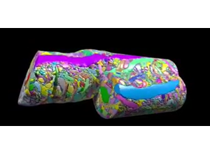

Slide 1 of 18

Human cortex · H01
Object segmentation over electron microscopy
H01 release · Lichtman Lab / Harvard & Connectomics at Google · CC BY 4.0
Shapson-Coe et al. (2024) · doi:10.1126/science.adk4858
Technical Course · Unit 01
Why Map the Brain
What a synapse-resolution wiring diagram can and cannot tell you, and how to turn a broad brain question into a measurable connectomics study.
Figure description and teaching notes
Instructor script: "This unit is deliberately not about microscopes. It is about the reasoning step that happens before anyone buys a microscope — deciding what claim the data will be asked to support. Most failed connectomics projects skip it."
Slide 2 of 18
Session outcomes (60 minutes)
- Translate a broad neuroscience goal into one testable connectomics hypothesis.
- Define measurable structural outputs and one defensible null model.
- State one explicit non-claim to prevent over-interpretation.
Figure description and teaching notes
Read the three outcomes aloud, then name the one that matters most: sorting a claim by what structure can support. The unit page says it plainly — it is the outcome most often failed. Everything in this session is practice for the non-claim in the third bullet.
Slide 3 of 18
Pedagogical arc
- Hook: why map structure at all?
- Model: question -> metric -> null -> boundary.
- Practice: learners draft and critique hypothesis briefs.
- Check: rubric-aligned exit ticket.
Slide 4 of 18
Visual opener: the motivation question

What specific scientific uncertainty is this figure trying to reduce?
Source: neuroAI source deck (2021 techtalk), Techtalk S10. Historical/context visual.
Figure description and teaching notes
Instructor script: "This is a motivating question, asked before any instrument is chosen. Before we go further, turn it into something fundable: what is the measurable structural endpoint, what is the null model, and what is the non-claim?"
Collect two or three answers. Each one should imply a different measurement — point that out. This is a framing device, not evidence.
Slide 5 of 18
Framing the evidence problem

Structure is evidence of organization and constraints, not direct proof of dynamics.
Source: neuroAI source deck (2021 techtalk), Techtalk S11. Historical/context visual.
Figure description and teaching notes
Instructor script: "What counts as brain data? Hold this against the resolution table from the unit: light microscopy tops out around 200–250 nm. An unmyelinated axon in neuropil is 80–300 nm, a spine neck 50–200 nm, a synaptic cleft about 20 nm."
The point to land: at 250 nm, two membranes 20 nm apart are one blur. Light microscopy can show that two arbors overlap in space; it cannot show that they are connected. That is the whole reason the field tolerates the cost of EM.
Slide 6 of 18
Reverse-engineering analogy and its limit
A good analogy for constraints. A bad one if it is used to claim full mechanistic causality from structure alone.
Source: neuroAI source deck (2021 techtalk), Techtalk S12. Historical/context visual.
Figure description and teaching notes
Instructor script: "A wiring diagram is a constraint on the space of possible dynamics, not a simulation. Any 'this circuit computes X' reading of this analogy is a Bin C claim wearing Bin A clothing."
If the room has not met the bins yet, preview them: A = structure alone suffices; B = structure plus one declared assumption; C = structure cannot establish this. The next two slides fill them in.
Slide 7 of 18
What structure can support (high-confidence)
- Motif enrichment/depletion hypotheses.
- Cell-type targeting bias quantification.
- Path-length and convergence/divergence constraints.
- Candidate priors for mechanistic or AI models.
Figure description and teaching notes
These are Bin A claims — each is a census or a comparison. Give the unit's concrete examples: "Neuron X makes 42 synapses onto neuron Y"; "type A targets proximal dendrites of type B"; "reciprocal pairs occur 4x more often than a degree-preserving null predicts"; "this projection is absent, at a stated detection sensitivity."
Then the Bin B middle ground: "this synapse is excitatory" needs the assumption that asymmetric morphology predicts glutamatergic transmission. Rule: name the assumption in the same sentence. "Putatively excitatory (asymmetric morphology)" costs four words.
Slide 8 of 18
What structure cannot prove alone
- Real-time state trajectories.
- Causal dynamics without perturbation/physiology.
- Full behavioral mechanism across contexts.
Figure description and teaching notes
Bin C. "This circuit computes X during behavior Y" needs physiology. "This synapse is potentiated" needs a functional or molecular measure. "This wiring causes the decision" needs perturbation. Neuromodulatory state is largely invisible in a standard EM volume.
Instructor script: "The most common failure of connectomics writing is a Bin C sentence in the abstract supported by a Bin A measurement in the results."
Slide 9 of 18
Workflow: question to claim
Biological question -> measurable endpoint -> dataset suitability -> null model -> interpretation boundary
Figure description and teaching notes
Walk the unit's worked repair. Version 0: "We will use connectomics to understand how the cortex implements predictive coding" — Bin C, no endpoint, unfalsifiable.
Move 1, structural signature: feedback axons from higher visual areas target a different dendritic compartment of L2/3 pyramidal cells than feedforward inputs.
Move 2, measurement with units: input synapses per source class per compartment per cell, binned by path distance.
Move 3, null: sources distributed in proportion to available postsynaptic surface area — distal synapses are the expected result, not evidence.
Move 4, non-claim: the data constrain where feedback arrives; they do not show it carries prediction error, and they do not establish sign.
Slide 10 of 18
Example A: recurrent microcircuit hypothesis
- Question: are triadic motifs enriched above local random expectation?
- Endpoint: motif counts normalized by degree/spatial constraints.
- Null: degree-preserving + distance-aware rewiring.
- Non-claim: enrichment does not prove online computation.
Figure description and teaching notes
Flag the trap this example carries, from unit §4: merge errors do not add noise symmetrically to motif counts. A single merge fuses two neurons' partner lists and manufactures triangles and reciprocal pairs far above the error rate itself. Motif analysis on unproofread segmentation is biased in a predictable direction — toward the interesting answer. Unit 09 returns to this.
Slide 11 of 18
Example B: targeting specificity hypothesis
- Question: does class X preferentially target compartment Y?
- Endpoint: synapse-density ratio by compartment with uncertainty.
- Null: shuffled target labels preserving volume occupancy.
- Non-claim: specificity does not imply causal functional role.
Figure description and teaching notes
Point out that the endpoint is a ratio. Ratios between comparably reconstructed populations quietly control for a great deal of reconstruction bias; absolute counts are sensitive to completeness. Experienced people reach for the ratio automatically — say so, because nobody else will.
Slide 12 of 18
Evidence quality gates before interpretation
- Reconstruction completeness threshold tied to claim type.
- Annotation agreement target for key labels.
- Error budget explicitly documented.
- Region/species/age boundary explicitly documented.
Figure description and teaching notes
Match the claim to the reconstruction state (unit §4). "Cell X synapses onto Y" needs both partners proofread through the synapse — otherwise a merge invents the connection. "Cell X has n inputs" needs the full dendritic arbor closed — split errors make n an undercount of unknown size. "Type A prefers B over C" needs both populations proofread to comparable completeness. "This projection is absent" needs a stated detection sensitivity.
Slide 13 of 18
Common failure modes (teach explicitly)
- Claim inflation from descriptive results.
- Metric mismatch to hypothesis.
- Dataset scale mismatch to biological question.
- Post-hoc null-model selection.
Figure description and teaching notes
Recovery moves from the unit page: if the analysis is "figured out once we have the data", write the figure caption for the main result now, with fake numbers — if you cannot write it, the experiment is not specified. Whole-graph summaries (mean path length, global clustering) are nearly useless for a local microcircuit claim. Neurons cut by the volume edge have truncated arbors. Populations proofread differently are confounded with effort.
Slide 14 of 18
Instructor discussion move (Think-Pair-Share, 6 min)
- Think: rewrite one overclaim into a bounded claim.
- Pair: identify missing metric/null information.
- Share: vote on strongest boundary statement.
Figure description and teaching notes
Seed overclaims from the unit's check-yourself: "This interneuron inhibits pyramidal cell firing" (Bin B verging on C — a GABAergic synapse can be depolarizing; write "putatively inhibitory"). "Kenyon cell input is random with respect to glomerular identity" (Bin A only if "random" is defined against a stated null and restricted to the reconstructed population).
Slide 15 of 18
In-class activity (12 min)
Draft one hypothesis brief containing:
- question,
- endpoint,
- null model,
- one confound,
- one explicit non-claim.
Figure description and teaching notes
Instructor script: "Produce it in this order. Do not skip to the method." Circulate and check step 5 first. The single best predictor of a weak brief is that the non-claim is empty or vague: if you cannot name a sentence you refuse to write, you have not found the boundary of your evidence.
Slide 16 of 18
Formative check rubric
- Pass: all five brief components present and coherent.
- Strong: endpoint and null align tightly to question.
- Flag: claims exceed available evidence class.
Figure description and teaching notes
The full lab rubric on the unit page scores falsifiability, measurement, null model, scope discipline and feasibility. For "strong" on the null: it preserves the nuisance structure that matters — degree, distance, cell-type composition — not just "compare to random".
Slide 17 of 18
Exit ticket (3 min)
Write one sentence each:
- "Our data can support..."
- "Our data cannot support..."
Slide 18 of 18
Figure attribution and reading
- Figures in this deck: 2021 neuroAI techtalk (historical/context visuals); each slide carries its own source line.
- White et al. (1986), Phil Trans R Soc B, doi:10.1098/rstb.1986.0056 — the first complete nervous system.
- Dorkenwald et al. (2024), Nature, doi:10.1038/s41586-024-07558-y — FlyWire whole adult brain.
- MICrONS Consortium (2025), Nature, doi:10.1038/s41586-025-08790-w — structure and function in the same neurons.
- Shapson-Coe et al. (2024), Science, doi:10.1126/science.adk4858 — H01 human cortex.
Figure description and teaching notes
These are the four anchors from unit §5, so "connectomics is useful" is a claim learners can defend with examples rather than enthusiasm. Note what the useful results have in common: each is a census or a comparison, not an assertion about computation. C. elegans's lasting lesson is negative and useful — the complete 302-neuron wiring diagram did not immediately yield an understanding of behavior.